Identidad y documentos
- Nombre comercial, razón social e identificación fiscal.
- Dirección, teléfonos, correo y textos de impresión.
- Series, formatos o preferencias de comprobante disponibles.
Este manual explica cómo preparar la empresa, construir los catálogos, operar inventario, compras, caja y punto de venta, y administrar la seguridad, reportes y solución de problemas frecuentes.
Pruebe con términos más generales, por ejemplo: producto, caja, venta o permiso.
Orden recomendado para habilitar una instalación sin dejar dependencias incompletas.
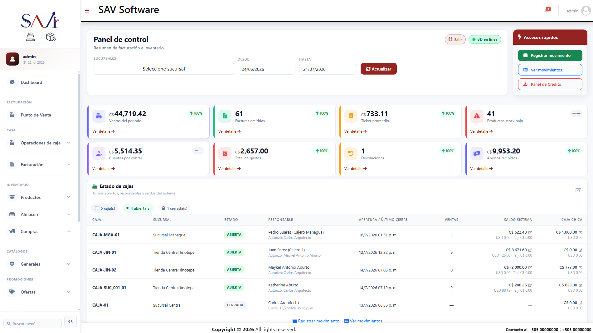
images/01-inicio-dashboard.png.Parámetros que afectan documentos, inventario, POS y apariencia.
Ingrese desde Seguridad → Parámetros de compañía. Los parámetros visibles deben mantenerse con valores válidos; los parámetros protegidos de licencia no se editan aquí.
LICENCEID y REPORTKEY no deben copiarse, mostrarse en capturas,
consultarse desde pantallas genéricas ni registrarse en logs. Use exclusivamente
Seguridad → Editar licencia.
En Seguridad → Marca y estilo configure logotipo, nombre mostrado y elementos visuales. Utilice imágenes optimizadas y verifique el resultado en pantalla y documentos.
Mantenga la tasa vigente antes de registrar cobros o gastos en moneda extranjera. La tasa maestra registrada en Catálogos → Tasa de cambio tiene prioridad sobre la tasa de respaldo. La tasa es información operativa: debe revisarse cuando cambie el día o la política de la empresa.
| Parámetro | Efecto |
|---|---|
POS_REQUIRE_SUFFICIENT_STOCK | Impide cobrar cuando un producto simple o los componentes de un kit no tienen cantidad suficiente. |
PURCH_PO_AUTH_THRESHOLD | Define el umbral de autorización de órdenes. Con valor cero, toda orden requiere autorización. |
EXPENSES_AFFECT_BANK_BALANCE | Determina si gastos bancarios reducen el saldo de la cuenta configurada. |
| Moneda y tasa de respaldo | Define moneda ISO local, símbolo y valor utilizado cuando no existe tasa maestra vigente. |
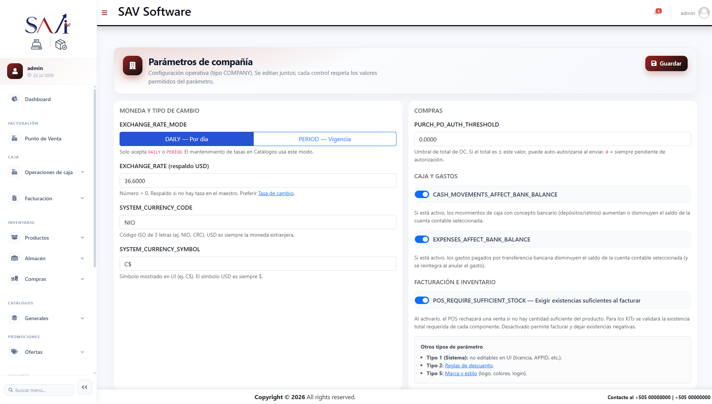
La estructura organizativa determina dónde se vende, almacena y consulta información.
Son catálogos geográficos usados por sucursales, clientes y proveedores. Normalmente llegan sembrados; agregue registros únicamente si la operación requiere nuevas ubicaciones.
Cada bodega pertenece a una sucursal. Cree al menos una bodega para manejar existencias, compras, ajustes y traslados. No reutilice la misma bodega para ubicaciones físicas distintas.
Se vincula con una sucursal y una bodega. Define dónde se abre el turno y desde qué inventario factura el POS.
Representa el equipo o terminal de cobro. Configure los datos requeridos y mantenga activos únicamente los dispositivos utilizados.
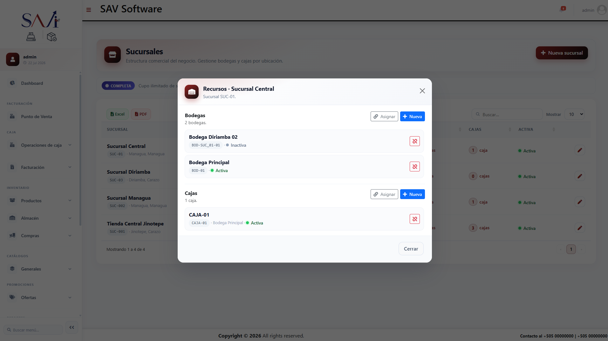
El acceso efectivo combina rol, menú, permisos, alcance organizativo y licencia.
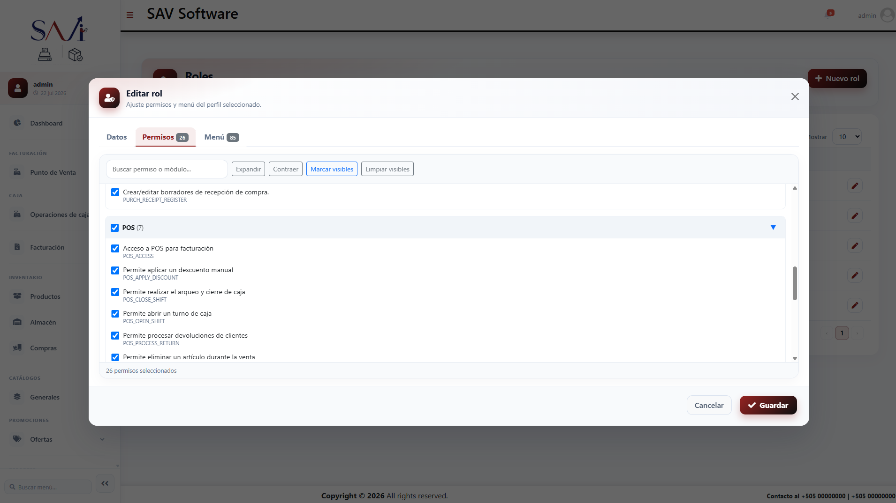
Prepare estos catálogos antes de crear artículos para evitar información inconsistente.
| Catálogo | Finalidad | Recomendación |
|---|---|---|
| Categorías y subcategorías | Clasificar productos, filtrar y analizar ventas. | Use una jerarquía corta y estable; no cree categorías duplicadas por ortografía. |
| Marcas | Identificar fabricante o marca comercial. | Registre una sola forma del nombre y desactive en vez de duplicar. |
| Modelos | Detallar líneas o modelos asociados a una marca. | Seleccione primero la marca correcta. |
| Propiedades | Definir atributos de variantes como talla, color o presentación. | Cree opciones reutilizables y nombres comprensibles. |
| Tipos de precio | Manejar precio regular, mayorista u otros niveles. | Defina cuál utilizará cada operación antes de cargar precios. |
| Códigos de barra | Asociar uno o más códigos a una variante. | No repita un código en variantes diferentes. |
| Unidad de medida | Expresar unidad, caja, libra u otra medida. | Utilice los catálogos sembrados y amplíelos solo cuando sea necesario. |
| Impuesto | Determinar tratamiento fiscal del artículo. | Confirme con el responsable contable antes de asignarlo. |
Seguridad → Carga de catálogos permite descargar una plantilla de referencia
para categorías, subcategorías, marcas, modelos, proveedores, unidades, impuestos, tipos de
precio y propiedades. Verifique la pantalla instalada antes de asumir que existe carga masiva
automática para todas las hojas. La importación de productos desde Productos
sí admite archivos .xlsx de hasta 500 filas y devuelve errores por fila.
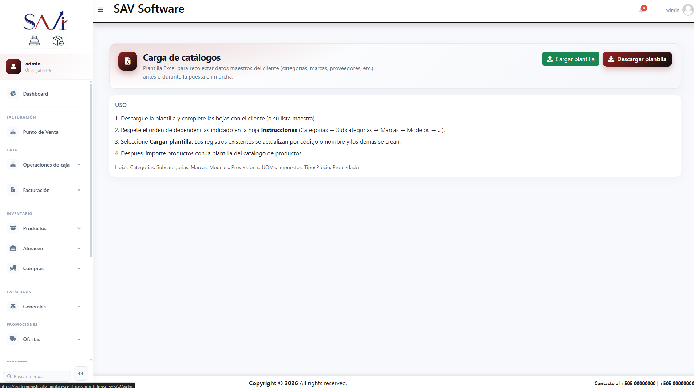
El producto contiene la información comercial; la variante es la unidad realmente vendida y almacenada.
Identificador interno de la variante. Debe ser único, estable y fácil de rastrear. El número de parte (NoParte) es opcional y también sirve para búsqueda.
Valor escaneado en el POS y utilizado en etiquetas. Una variante puede manejar códigos adicionales.
El costo apoya valorización y margen; el precio determina la venta antes de promociones y descuentos.
Los filtros por nombre deben aceptar diferencias de acentos. También puede buscar por SKU, código de barras, referencia, categoría o marca según la pantalla. Verifique el estado activo si un artículo no aparece.
Después de guardar el producto puede vincular variantes relacionadas, sustitutas o complementarias/surtidas. Estas relaciones aparecen en el detalle del POS para orientar al cajero. No cree relaciones circulares sin sentido ni relacione una variante consigo misma.
.xlsx y revise el resultado de cada fila.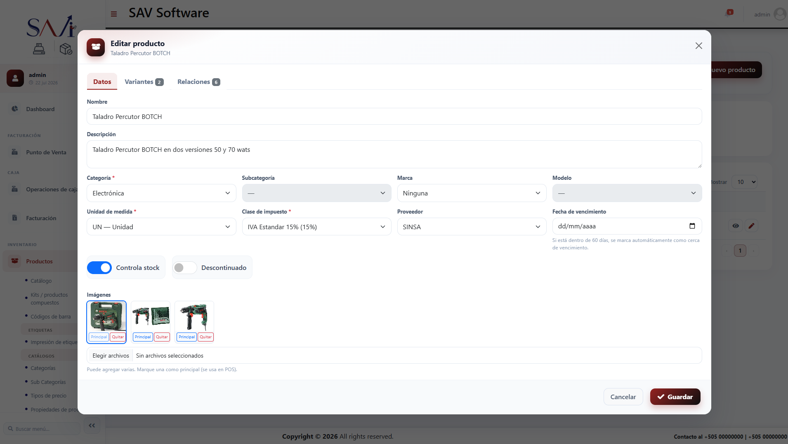
Un kit se vende como una unidad, pero consume las existencias de sus componentes.
La existencia no se guarda como stock independiente. Se calcula por el componente limitante: para cada componente se divide su existencia disponible entre la cantidad requerida y se toma el menor resultado entero. Si no puede armarse una unidad completa, el resultado es cero, nunca negativo.
Al vender, el sistema toma un snapshot de componentes y costo histórico. Esto permite que devoluciones y anulaciones reviertan los mismos componentes aunque la composición se modifique después.
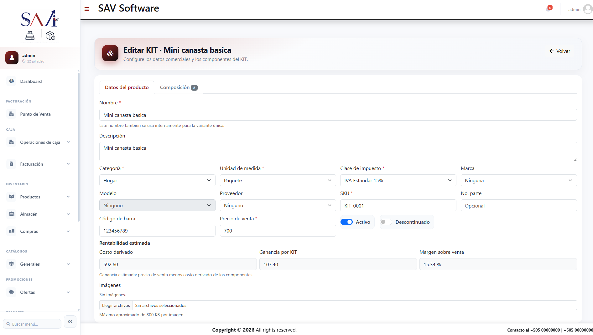
Maestros comerciales utilizados en facturación, crédito, compras y análisis.
Vista consolidada del comportamiento de pago: score, aging de saldos (0–30 / 31–60 / 61–90 / +90 días), mix contado vs crédito, facturas con saldo e historial de abonos. Ábralo desde el maestro de clientes, desde una factura con saldo pendiente o desde el POS al seleccionar el cliente (planes Completa, Profesional y Comercio).
Antes de crear, busque por identificación, código y nombre sin depender de acentos. Desactive registros obsoletos cuando ya tengan movimientos; no los elimine físicamente.
Ajustes, traslados, consulta de existencias y trazabilidad.
Use Almacén → Consulta productos para revisar existencia por bodega, costo, precio, estado y datos relacionados. Esta pantalla es de consulta; las correcciones se hacen mediante documentos de inventario.
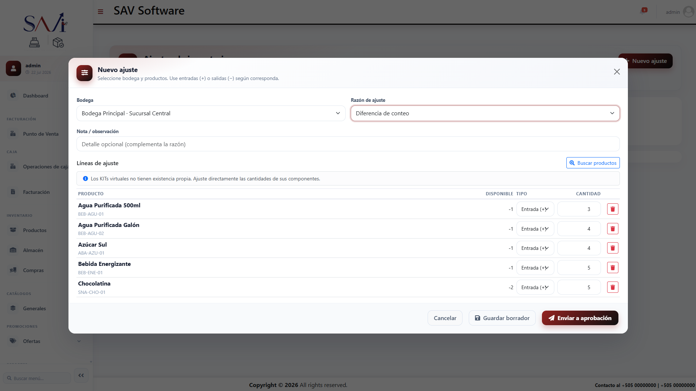
Proceso de abastecimiento desde la solicitud al ingreso físico.
Una cotización no afecta inventario. Una orden en borrador o pendiente tampoco. Una recepción guardada como borrador no incrementa stock: el movimiento se materializa al confirmarla. Las órdenes pueden avanzar por borrador, pendiente, autorizada, parcial, cerrada o anulada.
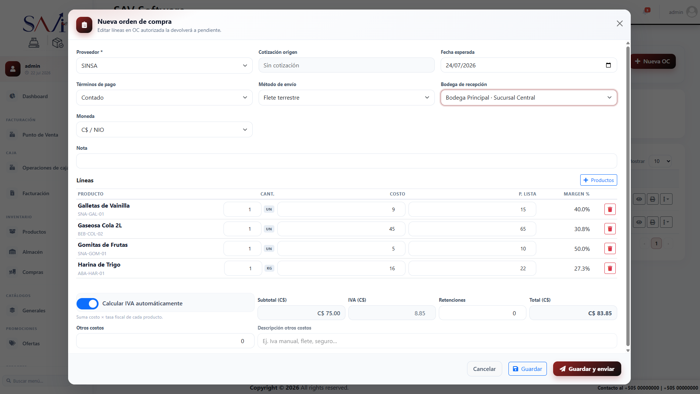
Herramientas comerciales que modifican el importe sin perder control ni trazabilidad.
Utilice hojas de trabajo para preparar cambios de precio antes de activarlos. Revise vigencia, estado, productos afectados y auditoría. No mezcle cambios sin relación en una misma hoja.
Reduce precio o importe según alcance, condición y vigencia. Verifique topes y prioridad cuando coincidan varias reglas.
Entrega una cantidad o producto de beneficio cuando se cumple la condición configurada.
Las reglas de seguridad pueden limitar el descuento manual y exigir supervisor. El POS registra quién solicitó y quién autorizó. Nunca comparta credenciales para aprobar.
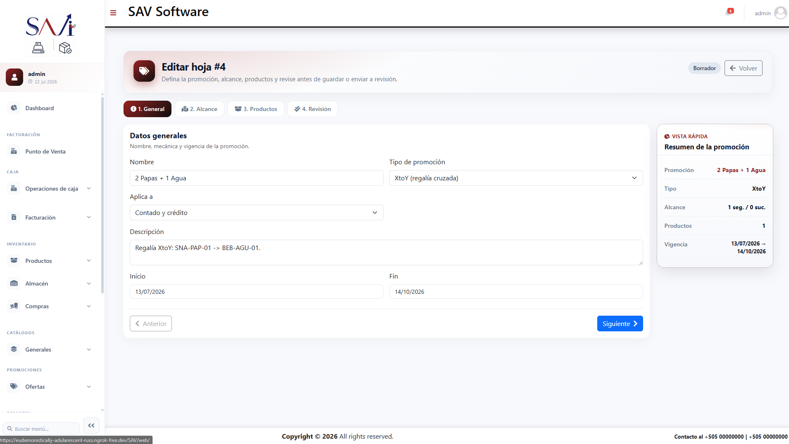
Requisitos y apertura correcta antes de facturar.
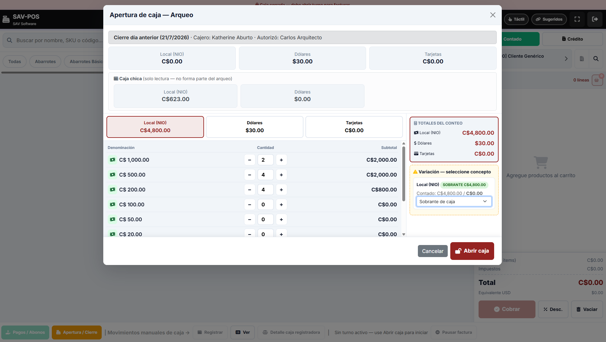
Desde la búsqueda del producto hasta la validación previa al cobro.
Seleccione el cliente antes del cobro cuando la factura deba identificarlo o sea a crédito. Revise límite, saldo y condición de crédito. Para venta de contado sin identificación utilice el cliente genérico definido por la empresa.
Las promociones vigentes se calculan según sus reglas. Un descuento manual puede estar limitado por porcentaje o requerir autorización. Compruebe el importe final y el motivo antes de continuar.
Al pulsarlo, el sistema valida el carrito antes de mostrar formas de pago. Si la empresa restringe ventas sin existencia, valida artículos normales y todos los componentes de kits. Corrija cantidades o reponga inventario cuando se muestre un faltante.
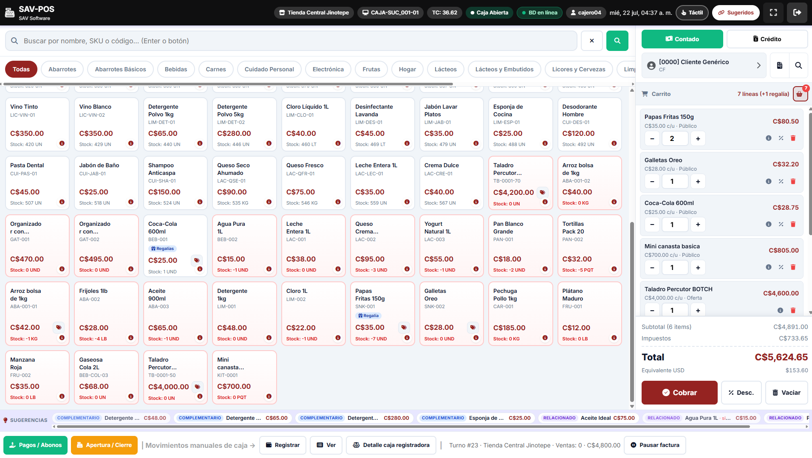
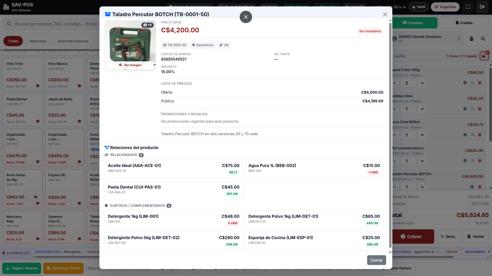
Complete el pago con importes verificables y sin duplicar registros.
Requiere cliente identificado y autorización conforme a límites y permisos. El saldo queda en cartera y se refleja en el panel de crédito y reporte de antigüedad.
Antes de cobrar a crédito o al dar seguimiento a un cliente, abra el panel de crédito para ver score de pago, aging de saldos, mix contado/crédito, facturas pendientes e historial de abonos. Desde ahí también puede iniciar un abono. El acceso está disponible en planes Completa, Profesional y Comercio.
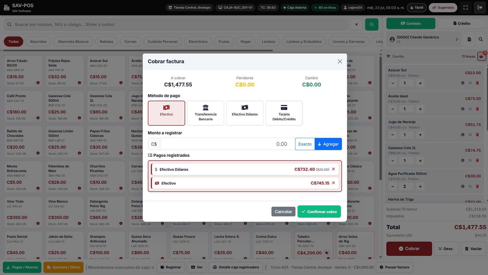
Operaciones posteriores que deben conservar la trazabilidad original.
Use la función de estacionar o dejar en espera cuando la venta deba retomarse. Al recuperarla, verifique nuevamente cliente, precios, promociones, existencia y turno.
Una cotización no descuenta inventario ni congela necesariamente precios. Puede crearla desde el
carrito del POS o desde la app SAVI Escáner (modo carrito local → Crear cotización).
El documento queda listado en cotizaciones (número COT-…) y puede recuperarse en el POS
para convertirlo en factura. Al cargarla se revalidan vigencia, artículos, precios, promociones y
existencias. Cuando se convierte queda marcada para evitar reutilización. Las cotizaciones
anuladas o ya convertidas no deben cargarse nuevamente. Requiere licencia de cotizaciones
(Completa, Profesional, Comercio) y, en la app, un usuario asignado al dispositivo.
Anule solo cuando el documento deba quedar sin efecto completo. Registre una explicación y autorización. El sistema revierte inventario y movimientos relacionados de acuerdo con la venta original; en kits utiliza el snapshot histórico de componentes.
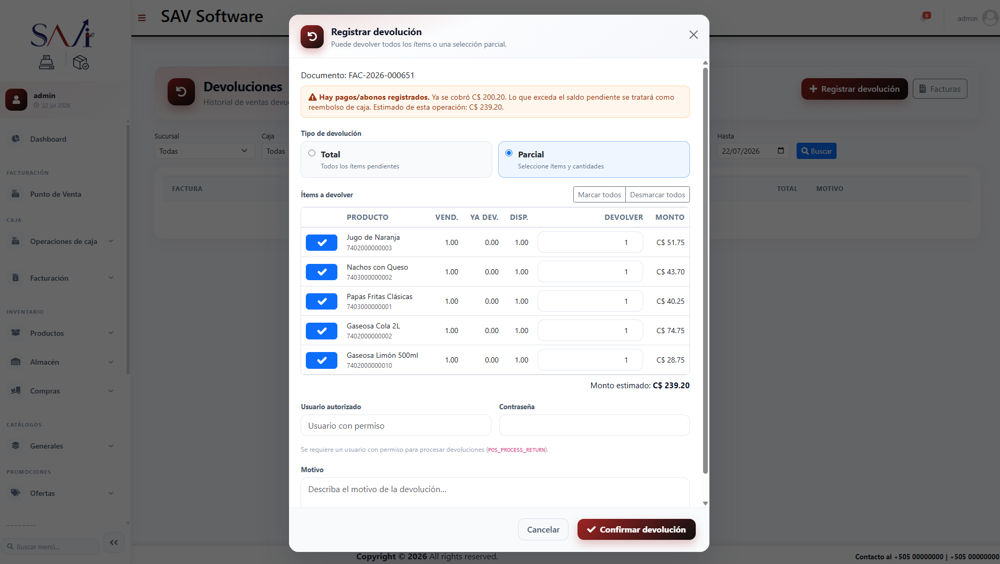
Control del efectivo y conciliación de cada turno.
Registre entradas y salidas distintas de pagos normales usando el concepto correcto, moneda, referencia y nota. Los movimientos anulados conservan auditoría y no aportan al flujo neto.
El fondo Caja de turno afecta el arqueo. Caja chica mantiene un saldo persistente por caja. Una dotación mueve fondos del turno a caja chica y un reintegro realiza el movimiento inverso; el sistema conserva movimientos enlazados.
Antes de registrar, configure tipos de gasto, beneficiarios y orígenes. Seleccione sucursal, caja o cuenta bancaria, moneda, monto, número de documento y soporte. No use un gasto para sustituir una compra de inventario.
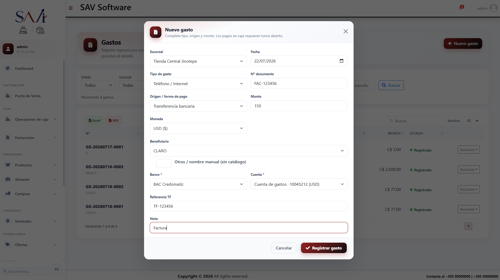
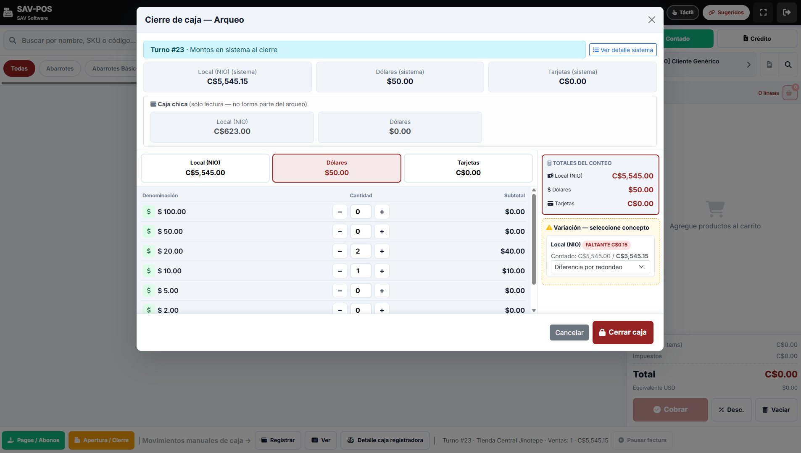
Filtros, tabla, gráficos, KPIs, información y diseño personalizado.
| ID | Reporte | Uso principal |
|---|---|---|
| 1 | Resumen ejecutivo de ventas | Venta neta, facturas, descuentos, devoluciones y ticket. |
| 2 | Ventas y margen por producto | Unidades, costo histórico, utilidad y margen. |
| 3 | Ventas por cliente y segmento | Frecuencia, importe y comportamiento de compra. |
| 4 | Formas de pago y monedas | Composición de cobros y conciliación. |
| 5 | Cartera de crédito y antigüedad | Saldos pendientes y prioridad de cobro. |
| 6 | Devoluciones | Productos, motivos, importes y autorizadores. |
| 7 | Facturas anuladas | Control de anulaciones por caja y usuario. |
| 8 | Existencias y valorización | Disponibilidad, mínimos y valor de inventario. |
| 9 | Kardex de inventario | Trazabilidad de entradas, salidas, costos y saldo. |
| 10 | Ajustes y traslados | Operaciones, estados, razones y responsables. |
| 11 | Rendimiento de kits | Venta, costo de componentes, utilidad y margen. |
| 12 | Análisis de gastos | Gastos por tipo, beneficiario, origen y estado. |
| 13 | Cierres y diferencias de caja | Conteo, sistema y diferencias por turno. |
| 14 | Movimientos y flujo de caja | Entradas, salidas, conceptos y flujo neto. |
| 15 | Órdenes y recepciones de compra | Solicitado, recibido, pendiente y cumplimiento. |
| 16 | Promociones y descuentos | Impacto en venta, descuento y rentabilidad. |
Usuarios habilitados pueden mostrar u ocultar columnas, cambiar alias, formatos, agrupaciones, gráficos, KPIs, reglas y paleta. El diseño se guarda localmente por ID y GUID del reporte. Use restaurar diseño predeterminado si una configuración importada produce resultados confusos.
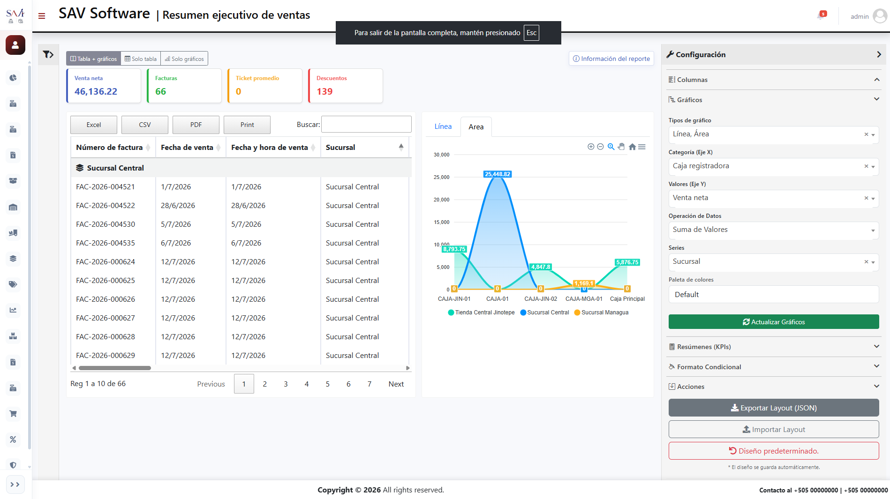
Selección de productos, plantilla, cantidad y envío a impresión.
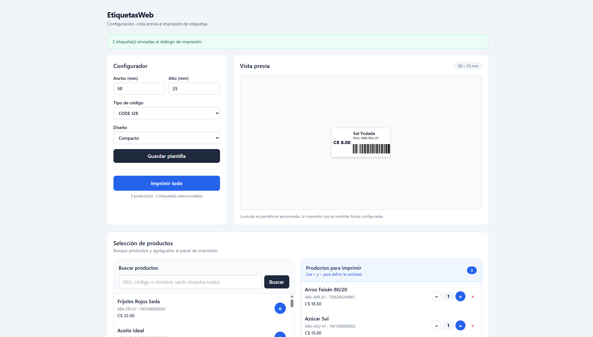
Consulta de piso, pistola hacia la caja, carrito local y cotizaciones desde el teléfono.
La app SAVI Escáner (SAV_BarcodeScanner) complementa el POS en el
piso de venta. El dispositivo debe registrarse en Seguridad, autorizarse y vincularse a un
usuario y a una caja (o privilegio FullAdmin multi-caja).
Con el interruptor en modo directo, cada código leído se envía de inmediato a la caja abierta y el POS lo agrega al carrito como una pistola de código de barras.
Con el modo carrito activo, la app valida cada producto, acumula cantidades y muestra subtotal, IVA y total antes de decidir si envía el lote al POS o crea una cotización.
COT-….Controles diarios, semanales y mensuales para una operación confiable.
Comprobaciones seguras antes de solicitar soporte.
| Situación | Qué revisar |
|---|---|
| No aparece una opción de menú | Rol, RoleMenu, permiso funcional, licencia, sucursal asignada y nueva sesión después de cambios. |
| Producto no aparece en POS | Estado activo, variante, precio, código, bodega/caja, filtro y disponibilidad según política. |
| El kit muestra cero | Existencia y cantidad requerida de cada componente en la bodega de la caja. |
| No permite cobrar | Turno activo, inventario, componentes de kit, cliente/crédito, descuentos y permisos. |
| Catálogo desplegable vacío | Registros activos, asignación de sucursal, permisos y respuesta del servicio de catálogos. |
| Reporte responde 403 | Licencia principal vigente, REPORTKEY válido con ese ID y menú del rol. |
| Reporte sin datos | Fechas, filtros, sucursales del usuario, estado de documentos y existencia de operaciones. |
| Etiqueta recortada | Tamaño en milímetros, márgenes, escala 100 %, orientación y controlador de impresora. |
| La app no envía al POS | Dispositivo autorizado, vinculado a caja, turno abierto en esa caja, URL del API y red alcanzable. |
| No permite cotizar desde la app | Licencia con cotizaciones de venta, usuario asignado al dispositivo y carrito local con al menos un ítem. |
| La sesión cambió después de licencia | Es esperado: actualizar licencia invalida sesiones y obliga a reconstruir capacidades y menú. |
| Caracteres incorrectos | Codificación UTF-8, collation y datos originales; no corrija masivamente sin respaldo. |
Referencia avanzada para soporte, implementación y desarrollo.
Aplicación ASP.NET Core MVC. Renderiza vistas Razor, conserva la sesión local, aplica política visual de licencia y actúa como proxy de consultas hacia el API.
API autorizada por JWT. Ejecuta servicios, cuotas, licencias, consultas SQL y endpoints dedicados como etiquetas y edición segura de licencia.
Contratos, DTO y modelos compartidos, incluidas capacidades, estados de licencia y solicitudes seguras.
Valida la licencia principal y la licencia de reportes. El sistema usa compatibilidad reflexiva cuando existen distintas firmas de DLL.
Conserva configuración, maestros, transacciones, inventario, seguridad y reportes. Procedimientos encapsulan operaciones críticas.
SPA independiente en HTML, CSS y JavaScript. Consume endpoints autorizados y genera impresión mediante iframe y JsBarcode.
| Proyecto o componente | Plataforma objetivo | Detalle |
|---|---|---|
| SAV_Web | .NET 8.0 (net8.0) | Aplicación ASP.NET Core MVC. |
| SAV_Api | .NET 8.0 (net8.0) | API ASP.NET Core. |
| SAV_Domain | .NET 8.0 (net8.0) | Biblioteca compartida de contratos y modelos. |
| SAV_BarcodeScanner | .NET MAUI 8.0 |
Destinos net8.0-android, net8.0-ios,
net8.0-maccatalyst y, en Windows,
net8.0-windows10.0.19041.0.
|
| CatalogSeedGen | .NET 8.0 (net8.0) | Utilidad interna para generación de catálogos. |
| EtiquetasWeb | HTML5 y JavaScript ES6+ | SPA estática sin runtime .NET ni proceso de compilación. |
16.0.1000.6 (X64),
Developer Edition de 64 bits, ejecutado sobre Windows 10 Pro
10.0, compilación 26200, con Hypervisor.
La compilación de SQL Server está fechada el 8 de octubre de 2022 a las 05:58:25.
El navegador no debe enviar SQL. Envía un QueryId y parámetros. El API obtiene la
definición permitida desde util.DataQuery, agrega el usuario cuando corresponde y
ejecuta la consulta. Las funciones sensibles usan endpoints o procedimientos dedicados.
El proyecto SAV_BarcodeScanner (nombre comercial SAVI Escáner) es un
cliente .NET MAUI adicional. Los dispositivos y solicitudes de registro se administran desde
Seguridad; no forman parte del flujo MVC principal y deben autorizarse antes de asociarlos con
usuarios o cajas.
POST /scan/quotation crea una cotización de venta vía el mismo flujo del POS (sales.sp_PosSaveSalesQuotation), sujeta a licencia SalesQuotations y AssignedUserId.Diccionario funcional de los esquemas principales.
org: organización y terceros| Tabla | Significado y uso |
|---|---|
| org.Region / org.City | Catálogo geográfico compartido por sucursales, clientes y proveedores. |
| org.Branch | Sucursal operativa. Es la unidad principal de alcance y seguridad. |
| org.User | Identidad local del usuario; no contiene por sí sola todos los permisos. |
| org.Role / org.UserRole | Roles disponibles y asignación de roles a usuarios. |
| org.UserBranch | Determina las sucursales que puede consultar u operar un usuario. |
| org.CashRegister | Caja vinculada con sucursal y bodega. |
| org.UserCashRegister | Asignación explícita de cajas a usuarios. |
| org.PosTerminal / org.CashRegisterDevice | Terminales y dispositivos relacionados con el cobro. |
| org.Customer / org.CustomerSegment | Clientes, crédito y clasificación comercial. |
| org.Supplier | Proveedor utilizado por productos y compras. |
inv: catálogo e inventario| Tabla | Significado y uso |
|---|---|
| inv.Category | Jerarquía de categorías y subcategorías. |
| inv.Brand / inv.Model | Marca y modelo comercial. |
| inv.Property / inv.PropertyOption | Propiedades configurables y sus opciones. |
| inv.Item | Maestro del producto: nombre, clasificación, impuesto, unidad y reglas generales. |
| inv.ItemVariant | Unidad concreta vendible: SKU, código principal, costo, precio base y número de parte opcional (NoParte). |
| inv.ItemVariantBarcode | Códigos de barra adicionales por variante. |
| inv.VariantPropertyValue | Valores de propiedades de una variante. |
| inv.ItemImage | Imágenes asociadas al producto. |
| inv.Warehouse | Bodega perteneciente a una sucursal. |
| inv.Stock | Existencia actual por variante y bodega. No sustituye al kardex. |
| inv.VariantComposition | Composición vigente de kits. |
| inv.KitComponentMovement | Trazabilidad de consumo y reversión de componentes. |
| inv.StockAdjustment / Line / Audit | Cabecera, detalle y auditoría de ajustes. |
| inv.WarehouseTransfer / Line / Audit | Traslados entre bodegas y sus cambios de estado. |
| inv.AdjustmentReason | Motivos sembrados o administrados para justificar ajustes. |
| Tabla | Significado y uso |
|---|---|
| sales.Transaction | Cabecera de factura: turno, usuario, cliente, totales, pagos, saldo y estado. |
| sales.TransactionLine | Productos, cantidades, precios, descuentos, impuestos y costo histórico. |
| sales.TransactionLineComponent | Snapshot de los componentes de kit usados por una línea. |
| sales.TransactionPayment | Formas de pago, moneda, referencia y monto. |
| sales.SalesQuotation / SalesQuotationLine | Cotizaciones de venta creadas desde POS o app móvil; vigencia, estado y conversión a factura. |
| sales.TransactionReturn / ReturnLine | Devolución y líneas vinculadas con la factura original. |
| sales.VariantPrice / PriceType | Precios por variante y tipo. |
| sales.ProductRelation | Relaciones de productos: relacionados, surtidos o sustitutos. |
| sales.DiscountAuthorization | Auditoría de autorizaciones de descuento. |
| sales.Bank / BankAccount | Banco sembrado y cuentas propias de la empresa. |
| cash.Shift | Turno de caja, apertura, cierre, sistema y diferencia. |
| cash.ShiftCashCount / ShiftCardCount | Conteos de efectivo y tarjetas por turno. |
| cash.ShiftCashMovement | Entradas y salidas extraordinarias del turno. |
| cash.PettyCashBalance | Saldo operativo de caja chica. |
| kdx.StockLedger | Kardex inmutable de movimientos, referencia, usuario, costo y saldo. |
| Esquema / tablas | Significado y uso |
|---|---|
| purch.Quotation / QuotationLine | Cotización recibida de proveedor. |
| purch.PurchaseOrder / Line / Audit | Orden, detalle y cambios de estado. |
| purch.GoodsReceipt / Line | Recepción física que alimenta inventario. |
| exp.Expense | Gasto con sucursal, origen, beneficiario, moneda, caja o cuenta. |
| exp.ExpenseType / ExpenseOrigin / ExpensePayee | Catálogos para clasificar el gasto. |
| pric.Worksheet / WorksheetAudit | Hojas de trabajo de precio y auditoría. |
| pric.Promotion / PromotionScope | Promoción y alcance por entidad comercial. |
| pric.Offer / OfferProduct / Reward | Condición de oferta, productos y regalías. |
| promo.Promotion | Modelo adicional de promoción usado por integraciones específicas. |
| Tabla | Significado y uso |
|---|---|
| sec.Parameters | Parámetros tipados; contiene valores protegidos que no deben exponerse. |
| sec.Permission / sec.RolePermission | Permisos funcionales y asociación con roles. |
| sec.MenuItem / sec.RoleMenu | Árbol de navegación y opciones visibles por rol. |
| sec.SupervisorOverrideLog | Auditoría de autorizaciones excepcionales. |
| sec.LicenseUpdateAudit | Hash y contexto de cambios de licencia principal, sin guardar el secreto. |
| sec.ReportKeyUpdateAudit | Auditoría independiente de licencia de reportes e IDs resultantes. |
| report.ReportsConfiguration | Definición, query, layout, GUID y HTML de ayuda del reporte. |
| report.ReportParameters | Filtros, tipo de control, catálogo, orden y distribución. |
| util.DataQuery | Registro de QueryId permitidos y SQL asociado. |
Cuenta de recuperación dedicada exclusivamente a la administración de licencias.
superusuario no debe vender, autorizar descuentos, abrir cajas, administrar
catálogos ni ejecutar consultas genéricas. Su única función es consultar y reemplazar la
licencia principal y la licencia de reportes.
org.User.IsSystemUser = 1 identifica la única cuenta técnica.org.Role.IsSystemRole = 1 identifica el rol reservado.is_system_user=true y la política del API exige ese claim junto con SEC_EDIT_LICENSE.| Capa | Protección |
|---|---|
| Base de datos | Índices filtrados garantizan una sola cuenta y un solo rol técnicos. Triggers impiden modificar identidad, rol, sucursales, cajas, dispositivos, permiso y menú reservados. |
| Procedimientos | Los mantenimientos de usuarios y asignaciones rechazan IDs protegidos. Los procedimientos de licencia exigen que el actor sea el usuario técnico activo. |
| API | Middleware deniega cualquier endpoint autenticado salvo /api/license/* y la lectura segura necesaria para reconstruir la sesión. |
| Web | Redirige cualquier navegación operativa al editor y rechaza permisos distintos de SEC_EDIT_LICENSE. |
| Sesiones antiguas | La comprobación también reconoce el nombre protegido para bloquear tokens emitidos antes de incorporar el claim. |
Aplique Util/system-user-protection-patch.sql después de confirmar que existe
exactamente un usuario llamado superusuario. El parche no crea la cuenta ni
cambia su contraseña: la marca, crea el rol técnico, retira asignaciones operativas y protege
la configuración. Es idempotente y debe probarse dos veces.
Util/clean-installation-data.sql conserva tanto admin como
superusuario. Admin recibe accesos operativos, pero la edición de licencias
permanece exclusivamente en la cuenta técnica.
La cuenta no puede editarse desde SAVI. Si debe cambiarse su hash de contraseña o repararse una asignación, abra una conexión SQL administrativa, establezca temporalmente el contexto de mantenimiento, realice el cambio y elimine el contexto en la misma sesión:
EXEC sys.sp_set_session_context
@key = N'ALLOW_SYSTEM_USER_MAINTENANCE', @value = 1;
-- Ejemplo: UPDATE org.[User] SET PasswordHash = '...' WHERE IsSystemUser = 1;
EXEC sys.sp_set_session_context
@key = N'ALLOW_SYSTEM_USER_MAINTENANCE', @value = NULL;LICENCEID o REPORTKEY en tickets, logs,
capturas o documentación entregada al cliente.
/Seguridad/Licencia.SYSTEM_USER_SCOPE_RESTRICTED.Cómo se determina el acceso efectivo a una función.
Los permisos representan acciones. El menú se administra de forma separada mediante
sec.MenuItem y sec.RoleMenu. Para acceder normalmente se necesita
tanto la opción del rol como el permiso exigido por controlador o endpoint.
| Módulo | Permisos relevantes |
|---|---|
| POS | POS_ACCESS, POS_OPEN_SHIFT, POS_CLOSE_SHIFT, POS_VOID_TICKET, POS_VOID_LINE, POS_APPLY_DISCOUNT, POS_PROCESS_RETURN. |
| Inventario | INV_MANAGE_PRODUCTS, INV_MANUAL_ADJUST, INV_ADJUST_AUTHORIZE, INV_TRANSFER_REGISTER, INV_TRANSFER_AUTHORIZE, INV_MANAGE_KITS. |
| Compras | PURCH_QUOTE_REGISTER, PURCH_PO_REGISTER, PURCH_PO_AUTHORIZE, PURCH_RECEIPT_REGISTER, PURCH_RECEIPT_CONFIRM. |
| Precios y gastos | PRIC_WORKSHEET_REGISTER, PRIC_WORKSHEET_AUTHORIZE, EXP_REGISTER. |
| Sistema | SYS_MANAGE_USERS, INV_PRINT_LABELS, SEC_EDIT_LICENSE. |
org.UserBranch limita sucursales y, por relación, bodegas, cajas y reportes.
org.UserCashRegister limita cajas asignadas. Los filtros del navegador no sustituyen
estas reglas: el API y SQL deben aplicarlas.
La licencia controla vigencia, plan y capacidades como usuarios, sucursales, bodegas, cajas, complejidad de reportes y generador de etiquetas. El servicio conserva un estado cacheado con copia defensiva y lo invalida al actualizar.
REPORTKEY es un GUID firmado y vinculado con la licencia principal por la DLL.
Se decodifica en IDs positivos, distintos y ordenados. Si falta, está alterado o no valida,
se autorizan cero reportes sin invalidar otras funciones.
SEC_EDIT_LICENSE, antiforgery y motivo administrativo.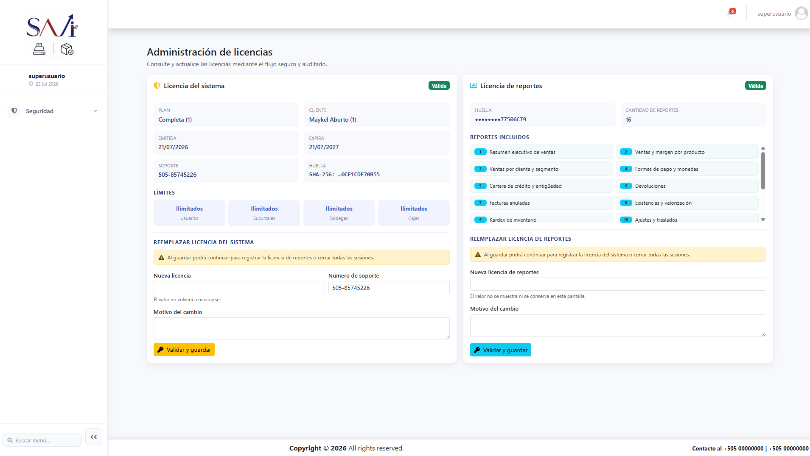
Metadatos, consultas, filtros, seguridad y presentación.
report.ReportsConfiguration: título, query, tipo, GUID, layout y ayuda HTML.report.ReportParameters: nombre, control, catálogo, orden, fila y columna.report.vwDinamicCatalogsList: registro de catálogos disponibles.report.spReportParameterCatalogs: opciones filtradas por usuario.report.spBuildDynamicQueryNew: valida y sustituye parámetros configurados.render-report.js: carga metadatos, controles y datos.report-engine.js: tabla, gráficos, KPI, formato, reglas y layout.
El procedimiento rechaza parámetros no configurados, valida números y fechas, escapa texto,
convierte selecciones múltiples y obliga a conservar @CurrentUserId en la consulta.
Las vistas sirven como fuentes estables para reducir doble conteo.
ReportsConfiguration con ID, GUID, query seguro, layout y ayuda./Reportes?id=N y asigne roles.Prácticas para mantener el sistema sin comprometer datos ni seguridad.
Prefiera scripts idempotentes con CREATE OR ALTER, validaciones de existencia,
transacciones y XACT_ABORT. Aplique primero en copia, luego dos veces para comprobar
idempotencia. Revise resultados, constraints e índices.
El archivo Util/clean-installation-data.sql elimina datos empresariales y operativos,
conserva catálogos sembrados y deja el administrador. Es destructivo, requiere confirmación explícita
y nunca debe ejecutarse sin respaldo verificado.
sec.SysException y logs sin copiar tokens o licencias.util.DataQuery es superficie de ejecución: toda alta o modificación debe revisarse como cambio de seguridad.db.sql es un snapshot parcial y puede no contener todas las extensiones actuales de compras, gastos, kits y reportes.